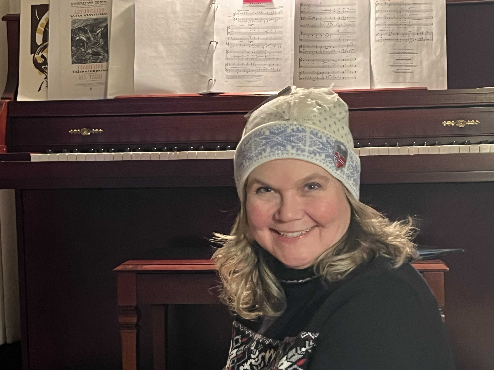

About
Summer Blooms began in the summer of 2025, when women from Fargo-Moorhead Choral Artists continued gathering during the break to sing, listen, and share life together. What started as a seasonal circle gradually became a committed trio, and we carried that work into the fall with regular rehearsals and a deepening artistic bond.
“I believe that music is one of the most beautiful forms of communication.”
Kay Beckermann, Pianist
Our early offerings focused on sacred repertoire, including “Veni, Creator Spiritus” by Berlioz, “O Jesu So Sweet” by Bach, and “Ave Maria” by Gabrieli. We also have a signature piece, the ballad “Summer Blooms” by Oksana Bihun. We have sung in religious services, including at the newly built NDSU Newman Center, and those experiences shaped our sense of purpose: to offer music with reverence, honesty, and depth.
As the ensemble grew and welcomed a pianist, our repertoire broadened into secular works, some playful and fun, others peaceful, spirited, and contemplative—music that can delight, steady, and renew. We are drawn to songs that open space for reflection, reconnect us with nature and with one another, and help us stay centered in ourselves and the world.
“For me, music is like meditation; it’s my escape from this world.”
June Stein, Soprano
Summer Blooms performs for all who love choral music and value musical experiences that are refined, sincere, and deeply human. We invite audiences into fully present listening: a place to set down burdens, breathe, and return to what is steadying, meaningful, and beautiful.
We are based in Moorhead, Minnesota, and serve the broader Fargo-Moorhead area.
“Summer Blooms is a dream I didn’t know I had that grew out of friendship and love of music.”
Oksana Bihun, Artistic Director
If this speaks to you, we warmly encourage you to audition, recommend a singer to audition, and subscribe to our email list for updates on upcoming performances.